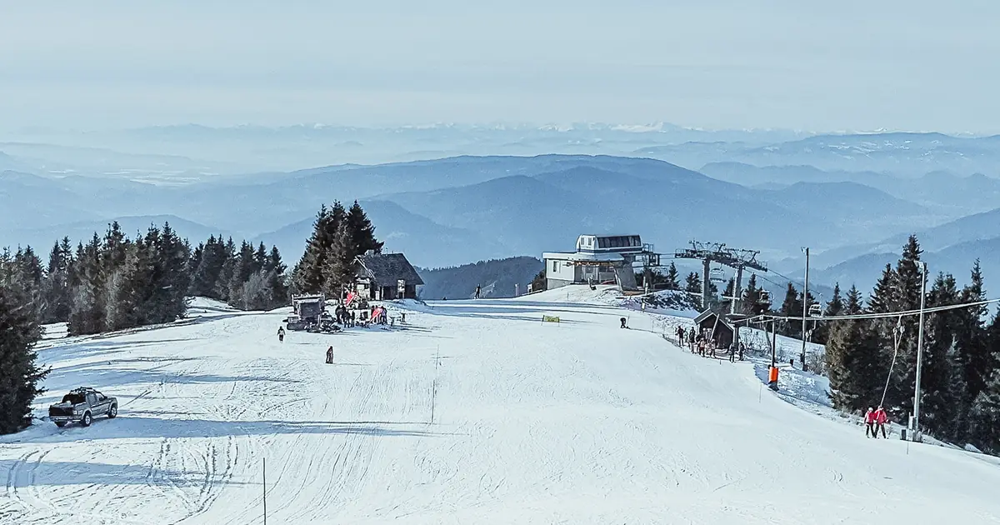

Neige fraîche dans les Alpes : 21 cm en 72 heures à Kope (3 novembre)
Kope a reçu 21 cm de neige fraîche en 72 heures. La station compte maintenant environ 11 cm sur le haut du domaine, selon notre modèle de neige.
Consultez les prévisions neige en temps réel pour Kope sur l'application SnowScopeHauteurs de neige, alertes poudreuse et carte 3D, gratuitement.
Où est tombée la neige fraîche
Ailleurs, Lackenhof, Rogla et Trije Kralji ont reçu 18 cm, 17 cm et 17 cm en 72 heures.
584 stations sur 1 178 dans les Alpes ont de la neige sur le haut du domaine aujourd'hui, et notre modèle compte 25 190 km² de surface enneigée.
| Station | Hauteur de neige | Neige fraîche, 72 h | Attendu, jours suivants | Sommet |
|---|---|---|---|---|
| Kope | 11 cm | 21 cm | 2 cm | 1 535 m |
| Lackenhof | 10 cm | 18 cm | 0 cm | 1 431 m |
| Rogla | 8 cm | 17 cm | 3 cm | 1 511 m |
| Trije Kralji | 10 cm | 17 cm | 2 cm | 1 337 m |
| Hinterstoder | 12 cm | 15 cm | 0 cm | 1 987 m |

Ce que mesurent les stations
La station de mesure Schönbüel (1 777 m) a mesuré 14 cm de neige au sol le 2 novembre, dont 11 cm de neige fraîche en 24 heures. La station de mesure Feuerkogel (1 618 m) a mesuré 9 cm de neige au sol le 1 novembre, dont 9 cm de neige fraîche en 24 heures. La station de mesure Plattkopf (2 220 m) a mesuré 30 cm de neige au sol le 2 novembre, dont 8 cm de neige fraîche en 24 heures.
Les chiffres des stations de ski sont des estimations du modèle pour le haut du domaine ; ceux des stations de mesure sont mesurés en un point, à la date indiquée.
Altitude, pentes et limite pluie-neige
L'altitude compte : à Kope, notre modèle donne 6 cm au sommet (1 535 m), 1 cm à mi-pente (1 120 m) et 0 cm en bas (705 m).
À Kope, l'isotherme 0 °C monte entre 2 810 m et 2 980 m le 6 novembre, au-dessus du sommet de la station (1 535 m) : pluie ou neige mouillée possibles sur toutes les pentes ce jour-là.
Ce qui arrive
D'ici le 6 novembre, notre prévision donne 3 cm à Rogla, 2 cm à Kope et 2 cm à Trije Kralji.
Les prévisions à quelques jours peuvent changer : regardez à nouveau la carte la veille du départ.
Sécurité et risque d'avalanche
Après une chute de neige, le vent forme des plaques sur les pentes abritées. En hors-piste, les premiers jours demandent le plus de prudence.
Conseils aux skieurs
- La neige fraîche est la meilleure dans les premières heures : partez tôt, avant le soleil et la foule.
- Cherchez la neige en altitude et sur les pentes orientées au nord : elles la gardent le plus longtemps, les pentes sud la perdent en premier.
- Avant le hors-piste ou la randonnée, lisez le bulletin d'avalanche officiel (liens ci-dessous).
- De la neige sur la carte ne veut pas dire que la station est ouverte : vérifiez remontées et dates d'ouverture sur son site.
- Activez une alerte poudreuse dans l'app SnowScope pour savoir quand Kope reçoit de la neige fraîche.
À propos de ces chiffres
Les hauteurs de neige des stations sont la neige la plus épaisse sur le haut du domaine, d'après le modèle de neige SnowScope (environ 1 km, calcul du 3 novembre) ; ce sont des estimations pour une zone, pas une mesure en un point. Les valeurs des stations de mesure sont mesurées à la date indiquée. Les prévisions peuvent changer. Consultez toujours le bulletin d'avalanche officiel avant le hors-piste.
Bulletins d'avalanche officiels: EAWS (Alps)
Citer ce bulletin
Pour la recherche, l'enseignement ou la presse : chiffres et graphiques réutilisables librement sous CC BY 4.0 avec cette citation.
SnowScope (2026), Neige fraîche dans les Alpes : 21 cm en 72 heures à Kope (3 novembre), https://snowscope.app/blog/fr/2026/11/alps-fresh-snow-powder-alert-3-november-2026.html, consulté le 2026-11-03
SnowScope (Atlas Labs). (2026, November 3). Neige fraîche dans les Alpes : 21 cm en 72 heures à Kope (3 novembre). SnowScope snow reports. https://snowscope.app/blog/fr/2026/11/alps-fresh-snow-powder-alert-3-november-2026.html
BibTeX
@misc{snowscope2026alpsfreshsnowpowderalert,
author = {{SnowScope (Atlas Labs)}},
title = {Neige fraîche dans les Alpes : 21 cm en 72 heures à Kope (3 novembre)},
year = {2026},
month = nov,
howpublished = {\url{https://snowscope.app/blog/fr/2026/11/alps-fresh-snow-powder-alert-3-november-2026.html}},
note = {Published 2026-11-03 16:31 UTC; accessed 2026-11-03}
}· CC BY 4.0 · Méthodes, données et outils →
Kope : neige et température selon l'altitude, cet hiver vs l'hiver dernier (outils) →
Suivre Kope
Gratuit : un message quand la neige arrive, et la météo chaque matin.
Autres bulletins neige

Sept jours dans la Silvretta Arena, un par un : où est la neige, quand passer à Samnaun, et ce que disent 46 hivers passés de la neige d'Ischgl à trois altitudes.

Davos et Klosters partagent six montagnes de ski. Un plan jour par jour, en commençant par le Parsenn, avec ce que 46 hivers passés de notre historique disent de ses altitudes.

Quand réserver Courchevel et les 3 Vallées, quel village choisir et où la neige tient, d'après 46 hivers passés.